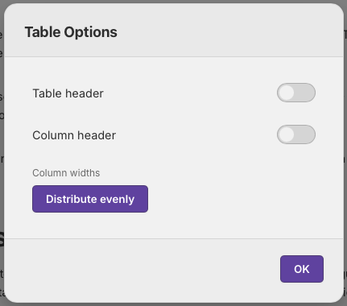

Tables
Tables are an integral part of many documents, and allows for more structured knowledge capture. Tables can be easily created by starting a line with a colon character. Doing so immediately creates a 1x1 table thay you can type straight into.
Adding Rows and Columns
In MellowMill the editor is designed to be used without taking you hands away from the keyboard in order to make the capture of information in a note a quick and easy as possible. Therefore adding columns and rows to a table is also a keyboard friendly action.
Windows: With the cursor in a table cell simply press CTRL + RIGHT ARROW to add a column to the right
Mac: With the cursor in a table cell use COMMAND + RIGHT ARROW to add a column to the right
The same pattern is true for columns to the left (use left arrow), rows below (down arrow) and rows above (up arrow).
This makes adding rows to table really simple and very quick.
Deleting Rows and Columns
Like adding rows and columns deleting them is just as quick an easy, you simply highlight the row or column and press the delete or backspace key.
Windows: With the cursor in a cell of the row you want to delete press SHIFT + CTRL + DOWN (or up) to highlight the row to delete, then press the DELETE key.
Mac: With the cursor in a cell of the row you want to delete press SHIFT + CMD + DOWN (or up) to highlight the row to delete, then press the BACKSPACE key.
Simarily using the right or left arrows highlights the column the cursor is in, which can be deleted as above.
Headers
Tables can be set to have headers. This is easily achieved by selecting the configuration cog icon to the right of the table whenever the cursor is in a table cell. This will open a dialig allowing you to selct whether to have a table header column or a table header row.
These options can also be opened anytime the cursor is in a table cell by pressing the F1 key on the keyboard and the option then set. Pressing ESC will then close the dialog.

Column Resizing
Table columns can be resized to suit your needs. This can be done by either using the mouse to grab the vertical lines between columns and dragging left or right to resize the column.
Alternatively this can also be done via the keyboard
Windows: ALT + LEFT makes the current column smaller, ALT + RIGHT makes it larger.
Mac: OPTION + LEFT makes the current column smaller, OPTION + RIGHT makes it larger.
#Basic Functionality